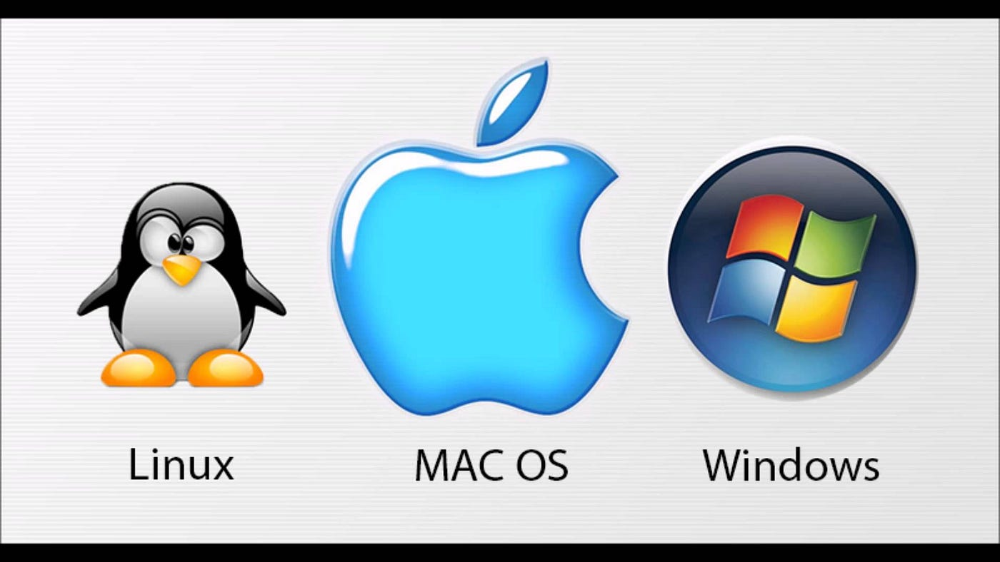

Quinta geração 1980 - ...
Quanto a opções alternativas de abordagem, podemos explorar como esses avanços estão impactando áreas específicas, como o ambiente de trabalho digital, a Internet das Coisas (IoT) ou até mesmo as implicações éticas e sociais dessas tecnologias emergentes. 